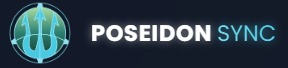
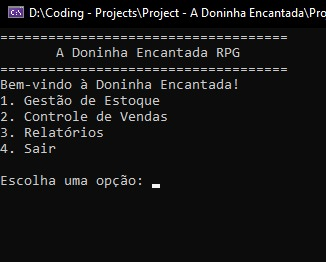
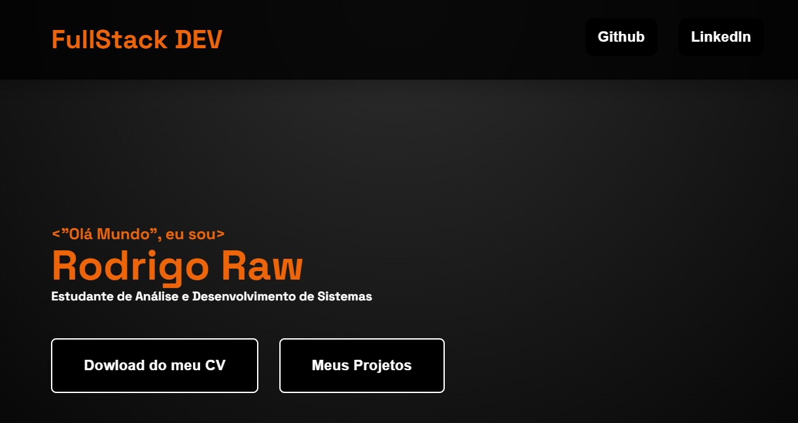

PROJETOS
Hackathon - Projeto "POSEIDON - Sync"

Projeto desenvolvido durante o Porto Hack 2025, com o objetivo de criar uma solução inovadora para o setor de logística e transporte marítimo utilizando inteligência artificial.
Tecnologias usadas: HTML/CSS/JS (front-end) + n8n (back-end).
Project - NexusIA

Projeto com foco em inteligência artificial e construção de personalidades de chatbots.
Tecnologias usadas: HTML/CSS/JS (front-end) + Node.js + Express.js (back-end).
Project - Loja RPG

Projeto desenvolvido com o objetivo de por meus conhecimentos de Orientação a Objetos C# em prática.
Tecnologias usadas: Console Application em C#.
Rodrigo Raw | Portfólio

Este é meu portfólio pessoal, onde apresento meus projetos e habilidades como desenvolvedor. Deixo o código disponível para consulta.
Tecnologias usadas: HTML/CSS/JS (front-end).